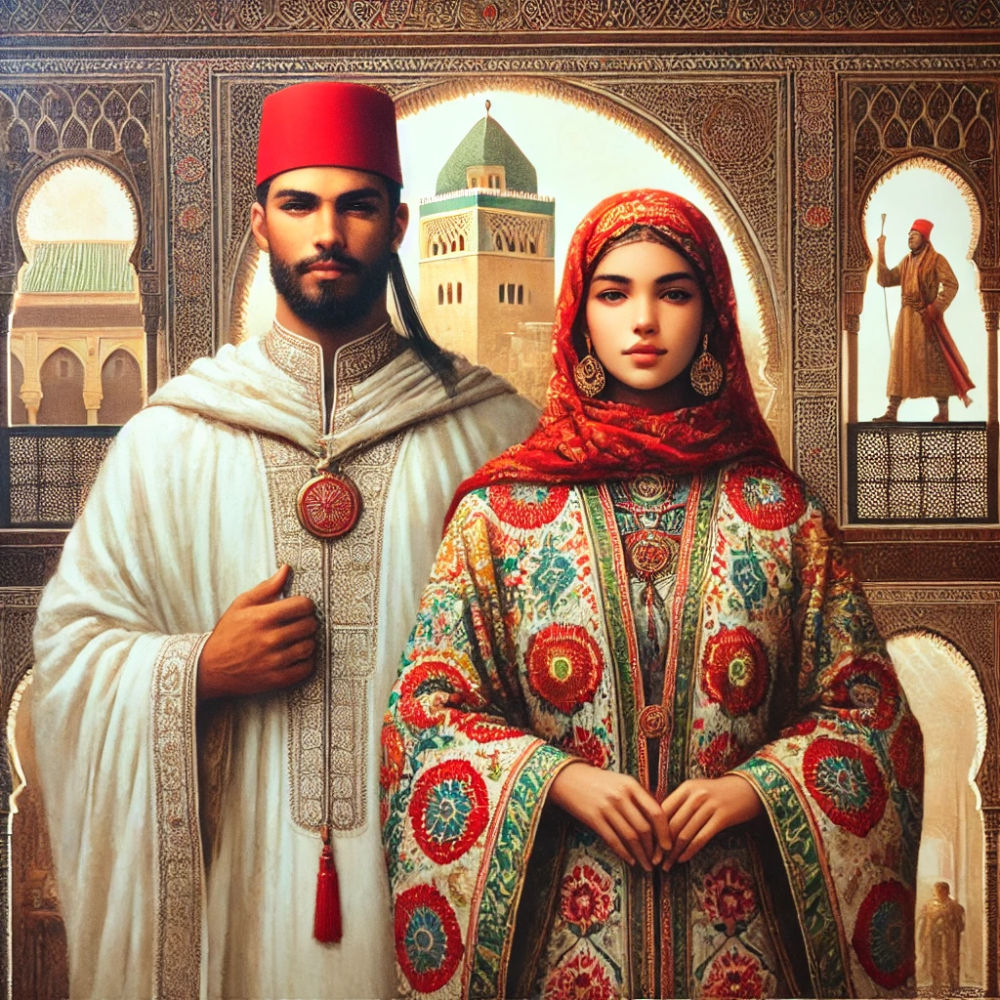

مقدمة
الزواج هو أحد أهم المؤسسات الاجتماعية التي تحظى باهتمام كبير في الثقافة المغربية والإسلامية
.
ومع التغيرات الاجتماعية والاقتصادية التي يشهدها العالم اليوم، يواجه الشباب المغربي تحديات كبيرة في اتخاذ قرار الزواج. هذا الكتاب يهدف إلى تسليط الضوء على أهمية الزواج في المجتمع المغربي، وتشجيع الشباب على اعتباره خطوة إيجابية نحو بناء حياة مستقرة، مع الاستناد إلى تعاليم الدين الإسلامي التي تحث على الزواج وتضع له أسسًا قوية.

فهرس الكتاب
1. **الفصل الأول: الزواج في الثقافة المغربية**
- تقاليد الزواج في المغرب.
- دور الأسرة والمجتمع في تشجيع الزواج.
- التحديات الاقتصادية والاجتماعية التي تواجه الشباب.
2. **الفصل الثاني: الزواج في الإسلام**.
- الزواج كسنة نبوية.
- فوائد الزواج في الإسلام: الاستقرار النفسي والعاطفي.
- أهمية اختيار الشريك المناسب وفقًا لتعاليم الإسلام.
3. **الفصل الثالث: التحديات التي تواجه الشباب المغربي**
- ارتفاع تكاليف الزواج.
- البطالة وتأثيرها على قرار الزواج.
- الضغوط الاجتماعية والتوقعات العالية.
4. **الفصل الرابع: حلول عملية لتشجيع الزواج**
- تبسيط مراسم الزواج وتقليل التكاليف.
- دور الدولة والمجتمع في دعم الشباب.
- أهمية التوعية بأهمية الزواج المبكر.
5. **الفصل الخامس: بناء أسرة ناجحة**
- أسس العلاقة الزوجية الناجحة في الإسلام.
- أهمية الحوار والتفاهم بين الزوجين.
- دور الأسرة في تربية الأبناء.
6. **الفصل السادس: قصص نجاح**
- قصص لشباب مغربي تخطى التحديات وبنى أسرة ناجحة.
- نماذج من الزيجات التي استندت إلى تعاليم الإسلام.
7. **الفصل السابع: نصائح عملية للشباب**
- كيفية التخطيط المالي للزواج.
- نصائح لاختيار الشريك المناسب.
- أهمية الصبر والإيمان في مواجهة التحديات.
الفصل الأول
**الزواج في الثقافة المغربية**
- يناقش هذا الفصل العادات والتقاليد المرتبطة بالزواج في المغرب، مثل الخطبة، حفل الزفاف، وتبادل الهدايا.
- يتم تسليط الضوء على دور الأسرة في اختيار الشريك ودعم الشباب في اتخاذ قرار الزواج.
الفصل الثاني
**الزواج في الإسلام**
- يستعرض هذا الفصل الأحاديث النبوية والآيات القرآنية التي تحث على الزواج.
- يتم شرح فوائد الزواج في الإسلام، مثل تحقيق السكينة والمودة بين الزوجين.
الفصل الثالث
**التحديات التي تواجه الشباب المغربي**
- يناقش هذا الفصل المشاكل الاقتصادية مثل البطالة وارتفاع تكاليف المعيشة.
- يتم أيضًا التطرق إلى الضغوط الاجتماعية التي تجعل الشباب يؤجلون الزواج.
الفصل الرابع
**
حلول عملية لتشجيع الزواج**
- يقدم هذا الفصل حلولًا مثل تبسيط مراسم الزواج وتقليل التكاليف.
- يتم أيضًا مناقشة دور الدولة في تقديم الدعم المالي للشباب.
الفصل الخامس
**
بناء أسرة ناجحة**
- يركز هذا الفصل على أسس العلاقة الزوجية الناجحة وفقًا لتعاليم الإسلام.
- يتم أيضًا مناقشة دور الأسرة في تربية الأبناء.
الفصل السادس
**
قصص نجاح**
- يقدم هذا الفصل قصصًا لشباب مغربي تمكنوا من تخطي التحديات وبناء أسرة ناجحة.
- يتم أيضًا عرض نماذج من الزيجات التي استندت إلى تعاليم الإسلام.
الفصل السابع
**
نصائح عملية للشباب**
- يقدم هذا الفصل نصائح عملية للشباب حول كيفية التخطيط المالي للزواج.
- يتم أيضًا تقديم نصائح لاختيار الشريك المناسب.
خاتمة
الزواج ليس مجرد علاقة بين شخصين، بل هو مؤسسة اجتماعية ودينية لها أبعاد عميقة.
من خلال هذا الكتاب، نأمل أن نساهم في تشجيع الشباب المغربي على اتخاذ قرار الزواج بثقة، مع الاستناد إلى تعاليم الإسلام التي توفر إطارًا قويًا لبناء أسرة ناجحة.